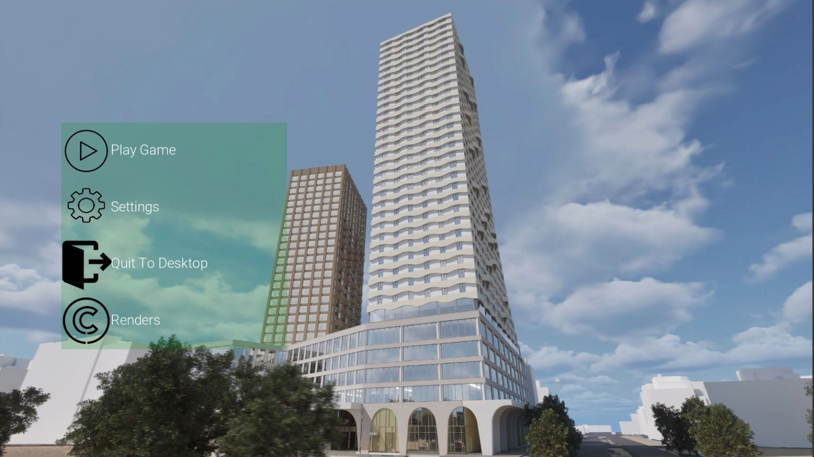
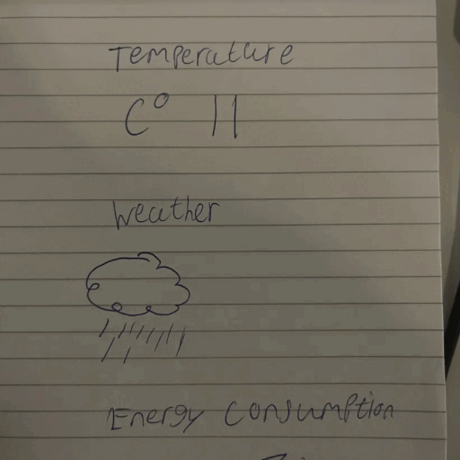
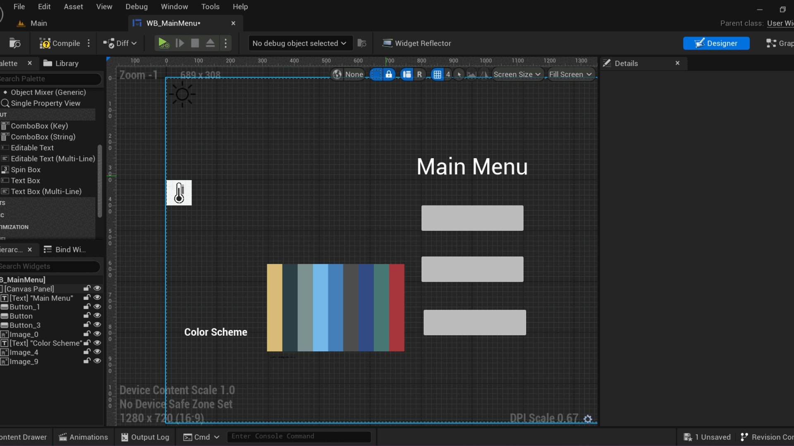
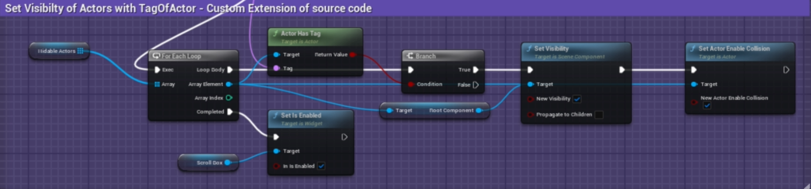
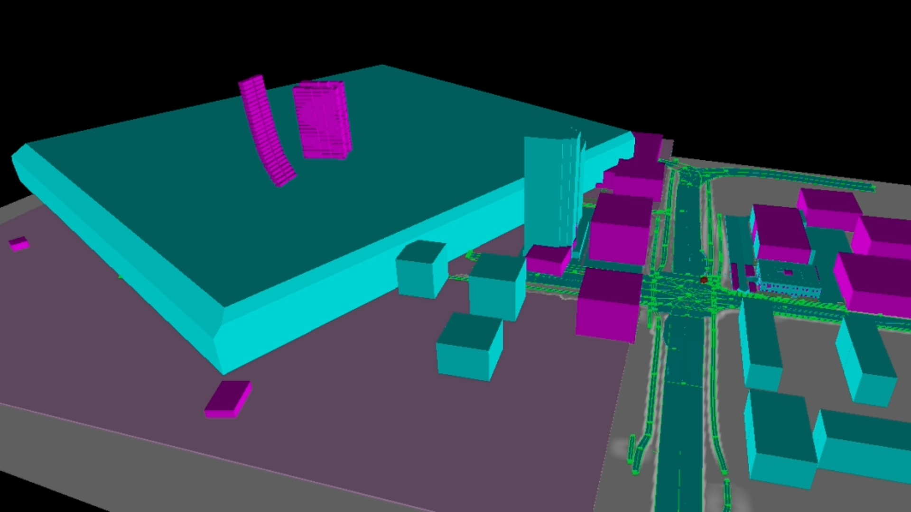

Project Status: Finished
Project Type: Professional / Freelance
Software Used: UE5, Photoshop
Languages Used: Blueprints
Team: 3 Devs, 1 3D Designer
The Ensemble is an architectural visualization project built in Unreal Engine. Developed in collaboration with Veldboom Studios for a client. The project spanned nearly two years of on-and-off development across three major phases.

While primarily an ArchViz product, Ensemble became my first large-scale Unreal project,
where I contributed as a Systems / UI programmer, working alongside 3D artists and other developers.
It stands as my most extensive and professional project to date.
My role evolved from early prototyping and feature design to maintaining the technical backbone of the project —
handling UI, gameplay-like systems, and Git repository management.

Earliest Sketches
First exposure to Unreal (transition from Unity). Sketched and prototyped UI → phone/tablet interaction. Integrated Ultra Dynamic Sky, added weather controls. Experimented with procedural tools (limited by hardware). Learned project pipeline basics (Trello, GitHub chaos).

UI system matured into a utility tablet. Added weather/time, light toggles, Component Filter. Took ownership of GitHub repo and fixed major LFS/workflow issues. Extended ArchViz base framework with custom logic. Designed seamless brick texture + foliage environments. Reduced build size from ~8GB → 1.6GB. First proper client-facing build delivered.
Component Filter Logic

Enables / Disables the visibility & collision of tagged Actors.
Joined Veldboom Studios as an intern while continuing Ensemble. Provided ongoing hotfixes and support through internship and final exams. Collaborated directly with client on reported issues (Blueprint ref fixes, POV switching, etc.). Handled final test builds and remote debugging.
Player Collision

The Player Collision viewmode highlights assets that collide with a character or Pawn.
Ensemble successfully delivered an interactive architectural visualization
that satisfied the client and established a strong professional collaboration.
For me personally, the project was:
A crash course in UI/UX prototyping, Blueprint systems, and technical pipelines.
An invaluable experience in professional teamwork and client collaboration.
A foundation that influenced my later game development projects, particularly in system design and prototyping.
Client has expressed interest in extending the project into VR.
A selection of additional visuals and behind-the-scenes material from the development process.